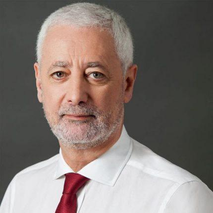
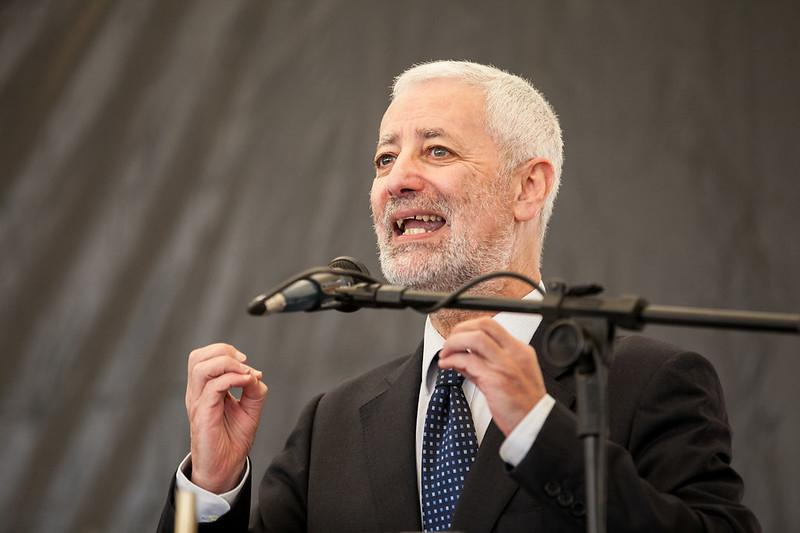
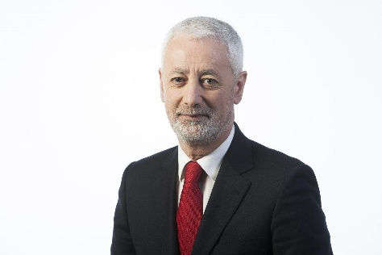
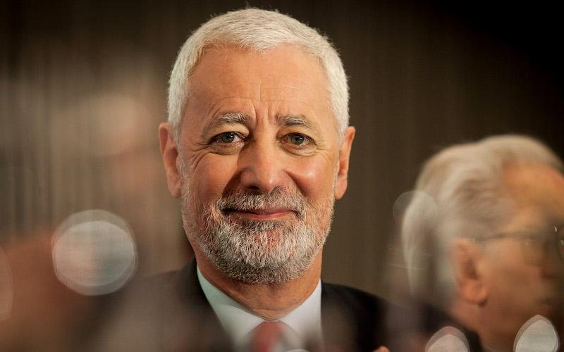

[REGISTRO 02 // DIPLOMACIA CIENTÍFICA]
Atuação de António Nóvoa em Paris, articulando os esforços da UNESCO de reconstrução epistemológica da escola no pós-pandemia sob a lente do bem comum.

António Manuel Seixas Sampaio da Nóvoa é indiscutivelmente um dos mais influentes intelectuais contemporâneos no campo das Ciências da Educação no espaço lusófono e global. Com uma carreira internacionalmente consagrada, Nóvoa é a principal referência teórica nas discussões sobre a profissão docente, a reconstrução da identidade pedagógica e a defesa intransigente da escola pública como bem comum da humanidade.
A sua atuação combina o rigor da investigação científica — com profundas contribuições na História da Educação e na Educação Comparada — à liderança institucional ativa. Foi Reitor da histórica Universidade de Lisboa (2006-2013), Embaixador de Portugal junto da UNESCO em Paris, e coordenou o histórico relatório global "Reimaginar nossos futuros juntos", desenhando as bases para um novo contrato social para a educação.
Registros históricos do percurso de António Nóvoa documentando a sua presença ativa e militante na UNESCO, em eventos acadêmicos internacionais e no diálogo com pesquisadores e professores da educação básica.

Atuação de António Nóvoa em Paris, articulando os esforços da UNESCO de reconstrução epistemológica da escola no pós-pandemia sob a lente do bem comum.

Momento de interlocução intelectual com pesquisadores em programas de pós-graduação no Brasil, onde o seu referencial é amplamente estudado e debatido.

Registro de sua participação em conferências nacionais e eventos escolares, reafirmando que o futuro da sociedade exige a defense intransigente do professorado.
"A formação não se constrói por acumulação de cursos, técnicas ou conhecimentos, mas através de um trabalho de reflexão crítica sobre as práticas e de reconstrução permanente de uma identidade profissional."
O arcabouço epistemológico construído por Nóvoa fundamenta-se em cinco grandes pilares teóricos, organizados para superar o reducionismo técnico da atividade docente.
Defesa contundente de que a formação docente deve ocorrer "construída dentro da profissão". Critica com vigor os modelos puramente tecnicistas ou baseados no adestramento metodológico, propondo uma articulação profunda com o saber-fazer reflexivo e a partilha coletiva da prática profissional.
Investigação pormenorizada sobre como os professores constroem sua profissionalidade através do resgate e análise de suas próprias trajetórias. Valoriza a produção teórica por meio das narrativas de si, autobiografias docentes e a valorização pedagógica dos saberes experienciais cotidianos.
Estudo exaustivo sobre a constituição da forma escolar moderna a partir do século XIX. Nóvoa examina historicamente a profissionalização progressiva do magistério, a gênese dos sistemas educativos nacionais e a influência das reformas institucionais clássicas nas gramáticas escolares.
Renovação teórica da disciplina de Educação Comparada. Rompe com análises estritamente quantitativas e estatísticas de organismos multinacionais, integrando uma densa perspectiva histórica, antropológica e cultural para compreender o fluxo e a hibridização das políticas educativas globais.
Abordagem crítica em relação à metamorfose contemporânea da escola face à invasão silenciosa das tecnologias digitais, à privatização imposta pelas EdTechs e às crises democráticas globais. Defende a reconstrução criativa da escola sem destruir sua natureza pública, coletiva e socializadora.
Navegue pelas principais sentenças extraídas do livro "Professores: libertar o futuro", selecionadas para provocar debate crítico.
"A pandemia encerrou o longo 'século escolar', iniciado na segunda metade do século XIX. A escola, tal como a conhecemos, acabou. Começa, agora, uma outra escola, cujos contornos se definem nos tempos de transição que hoje vivemos. Esta transição exige de nós um posicionamento claro, de afirmação dos valores públicos e comuns da educação."